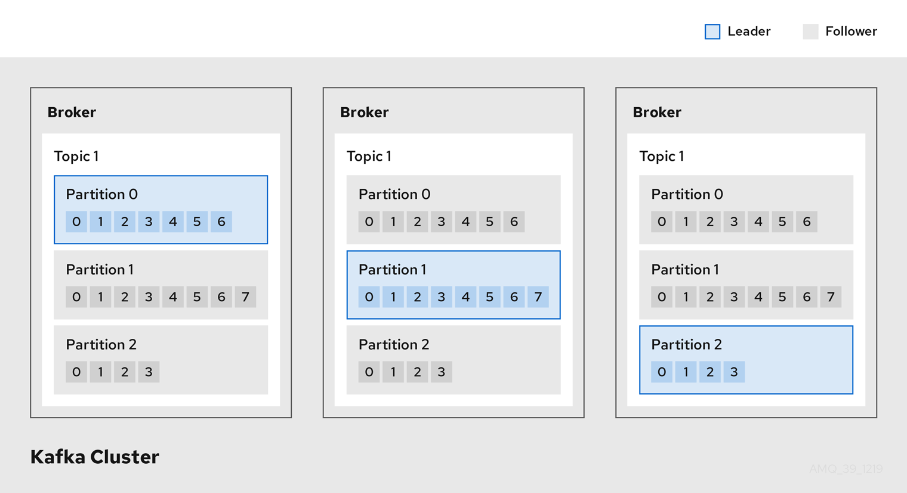

apiVersion: kafka.strimzi.io/v1beta1
kind: KafkaTopic
metadata:
name: my-topic
labels:
strimzi.io/cluster: my-cluster
spec:
partitions: 1
replicas: 1
# ...2. About Kafka
Apache Kafka is an open-source distributed publish-subscribe messaging system for fault-tolerant real-time data feeds.
Additional resources
-
For more information about Apache Kafka, see the Apache Kafka website.
2.1. Kafka concepts
Knowledge of the key concepts of Kafka is important in understanding how Strimzi works.
A Kafka cluster comprises multiple brokers Topics are used to receive and store data in a Kafka cluster. Topics are split by partitions, where the data is written. Partitions are replicated across topics for fault tolerance.
Kafka brokers and topics

- Broker
-
A broker, sometimes referred to as a server or node, orchestrates the storage and passing of messages.
- Topic
-
A topic provides a destination for the storage of data. Each topic is split into one or more partitions.
- Cluster
-
A group of broker instances.
- Partition
-
The number of topic partitions is defined by a topic partition count.
- Partition leader
-
A partition leader handles all producer requests for a topic.
- Partition follower
-
A partition follower replicates the partition data of a partition leader, optionally handling consumer requests.
Topics use a replication factor to configure the number of replicas of each partition within the cluster. A topic comprises at least one partition.
An in-sync replica has the same number of messages as the leader. Configuration defines how many replicas must be in-sync to be able to produce messages, ensuring that a message is committed only after it has been successfully copied to the replica partition. In this way, if the leader fails the message is not lost.
In the Kafka brokers and topics diagram, we can see each numbered partition has a leader and two followers in replicated topics.
2.2. Producers and consumers
Producers and consumers send and receive messages (publish and subscribe) through brokers. Messages comprise an optional key and a value that contains the message data, plus headers and related metadata. The key is used to identify the subject of the message, or a property of the message. Messages are delivered in batches, and batches and records contain headers and metadata that provide details that are useful for filtering and routing by clients, such as the timestamp and offset position for the record.
Producers and consumers

- Producer
-
A producer sends messages to a broker topic to be written to the end offset of a partition. Messages are written to partitions by a producer on a round robin basis, or to a specific partition based on the message key.
- Consumer
-
A consumer subscribes to a topic and reads messages according to topic, partition and offset.
- Consumer group
-
Consumer groups are used to share a typically large data stream generated by multiple producers from a given topic. Consumers are grouped using a
group.id, allowing messages to be spread across the members. Consumers within a group do not read data from the same partition, but can receive data from one or more partitions. - Offsets
-
Offsets describe the position of messages within a partition. Each message in a given partition has a unique offset, which helps identify the position of a consumer within the partition to track the number of records that have been consumed.
Committed offsets are written to an offset commit log. A
__consumer_offsetstopic stores information on committed offsets, the position of last and next offset, according to consumer group.
Producing and consuming data